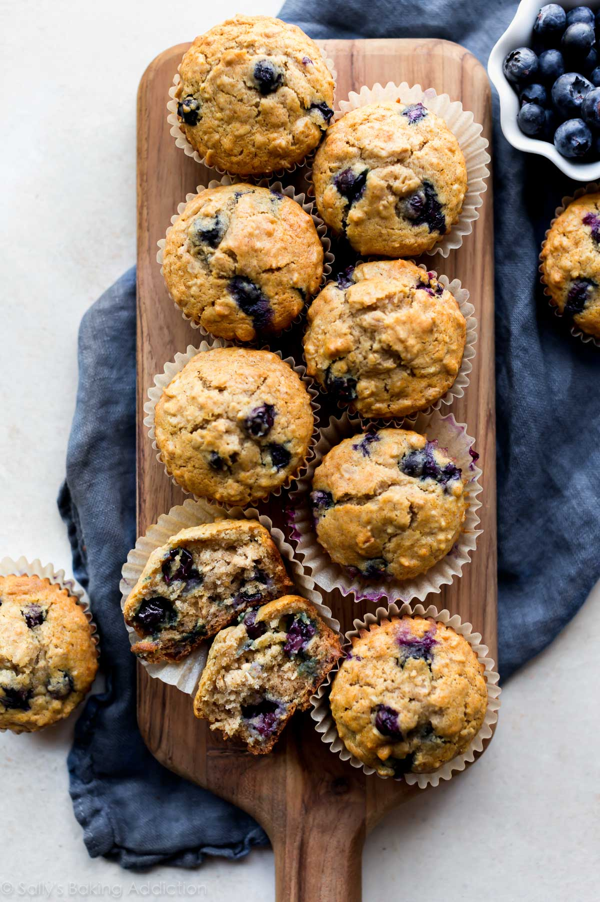

Blueberry Oatmeal Muffins

This Blueberry Oatmeal Muffin recipe and its images were sourced from Sally's Baking Addiction
To view the recipe directly from the source click here
1 cup (240mLs) milk
1 cup (85g) old fashioned whole rolled oats
1 and 1/4 cups (156g) all purpose flour (Learn how to properly measure things here